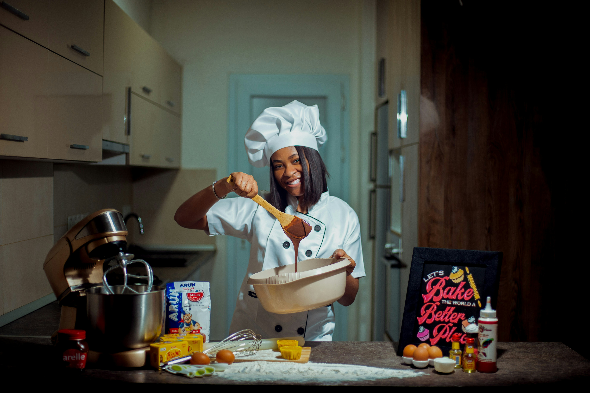

Our Story

Founded in 2021 by Thandeka Mokoena, our bakery grew from a home kitchen into a trusted name for celebration cakes and event catering across Johannesburg.
Our Mission
To bring handcrafted, locally-sourced baked goods to every table, celebration, and workplace in Johannesburg.
Our Vision
To become Gauteng's most trusted independent bakery for personalised celebration cakes and corporate catering.
Meet the Team
A small, dedicated team of bakers and decorators passionate about quality and personal service.